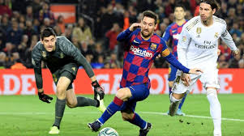

Voetbal word over de hele wereld gekeken. Dat betekent ook dat de spelers zelf heel veel betaalt krijgen en zelf ook heel veel waard zijn. In Engeland krijgt gemiddeld een profvoetballer 3,4 miljoen per jaar. Een flink salaris dus en dat is nog het gemiddelde. De bekende Lionel Messi verdient 87 miljoen per jaar. Op tweede plek staat Cristiano Ronaldo met een jaarsalaris van 83,2 miljoen. Naast salarissen kunnen clubs ook spelers kopen van andere clubs. Neymar is bijvoorbeld van de voetbal club FC Barcalona gekocht door PSG voor 222 miljoen.